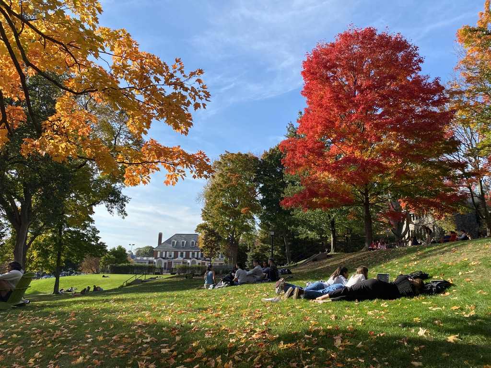

Carlie S
Major: Human Factors Engineering
IP Address: 130.64.64.35
Hometown: Silver Spring, MD

My favorite place: Prez Lawn, especially in the fall
as shown here. I think it's the perfect meeting place at Tufts
where I can catch up with friends and (pretend to) do work.
My favorite restaurant:
Landwer Cafe
Something no one would expect: I grew up in an
intentional community of around 100 people where we made all decisions
by consensus.